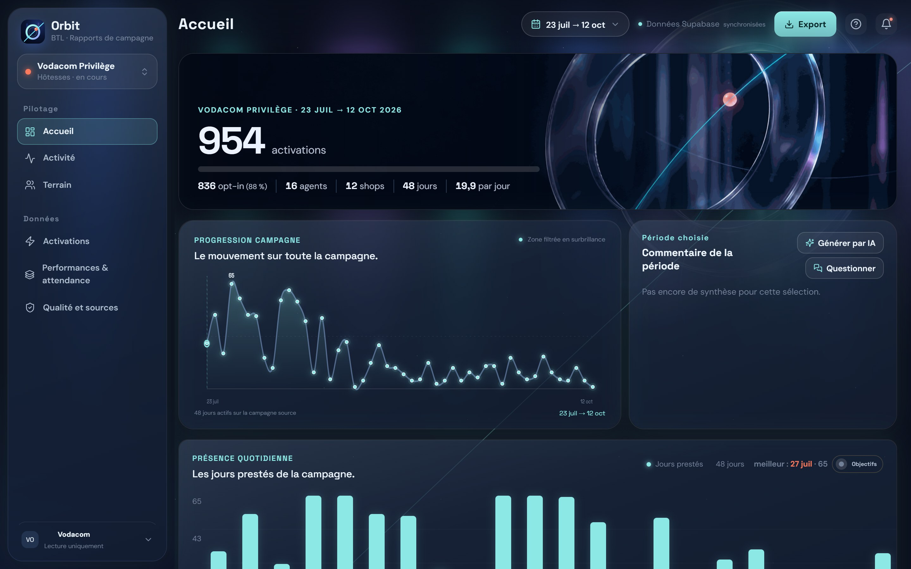
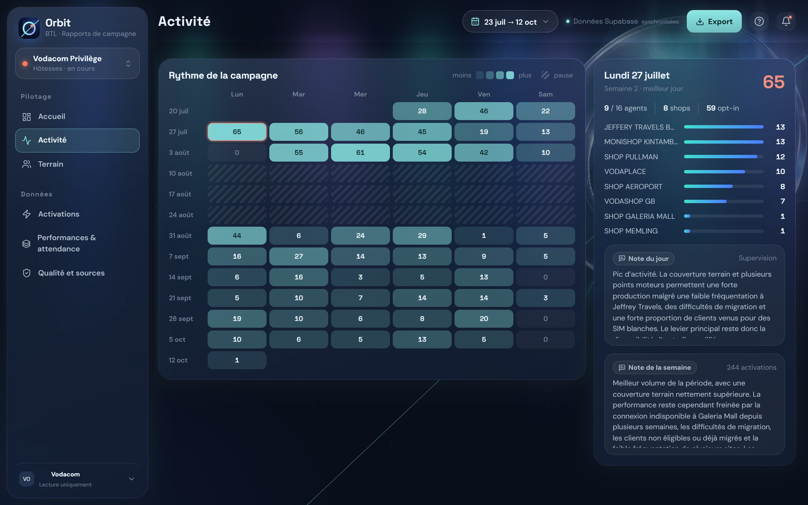
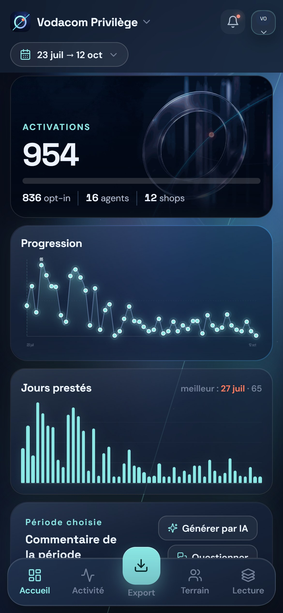
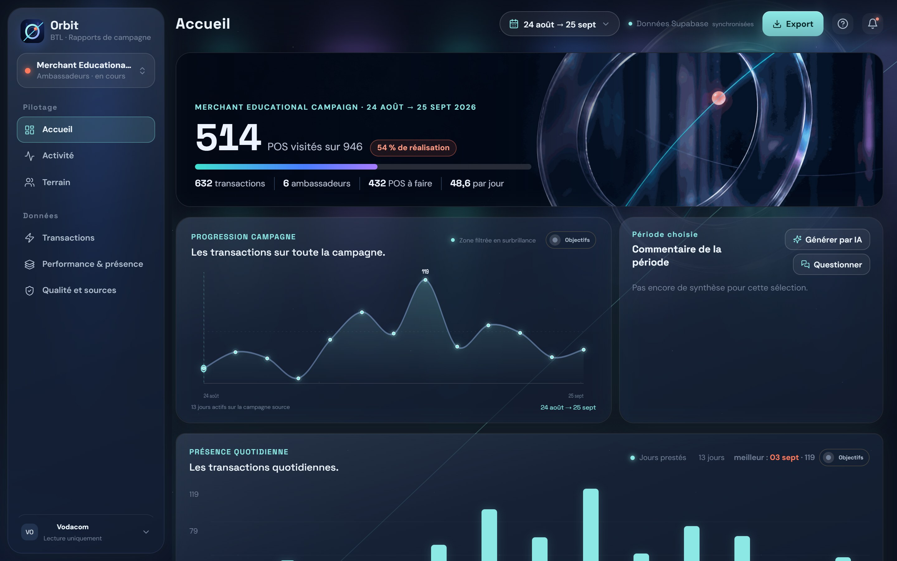
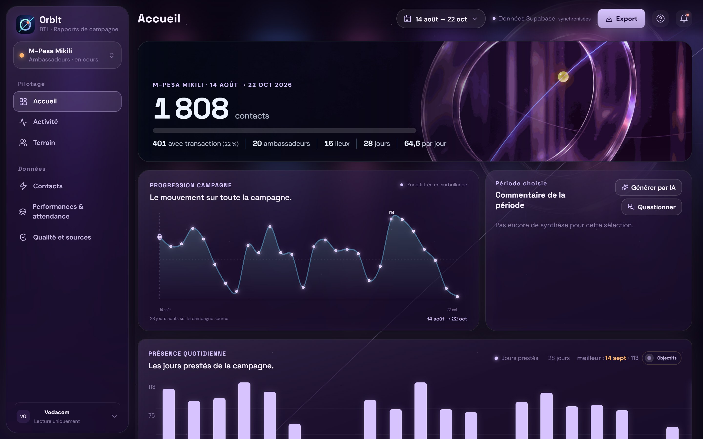
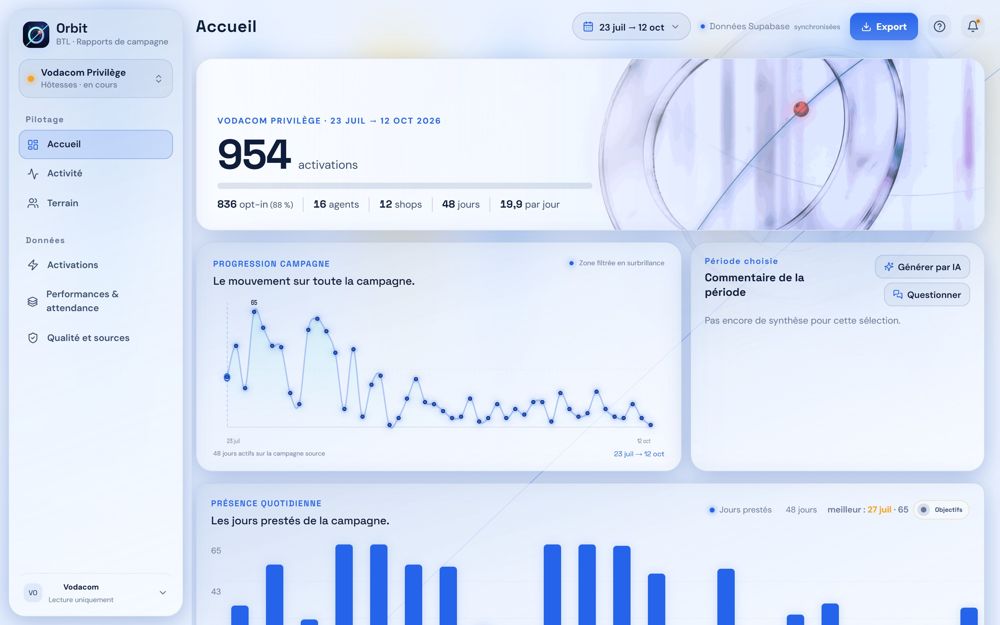
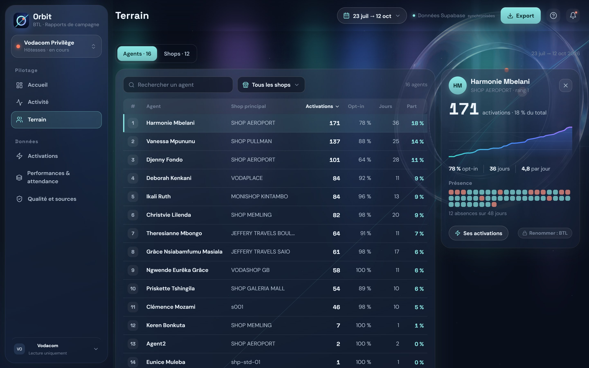
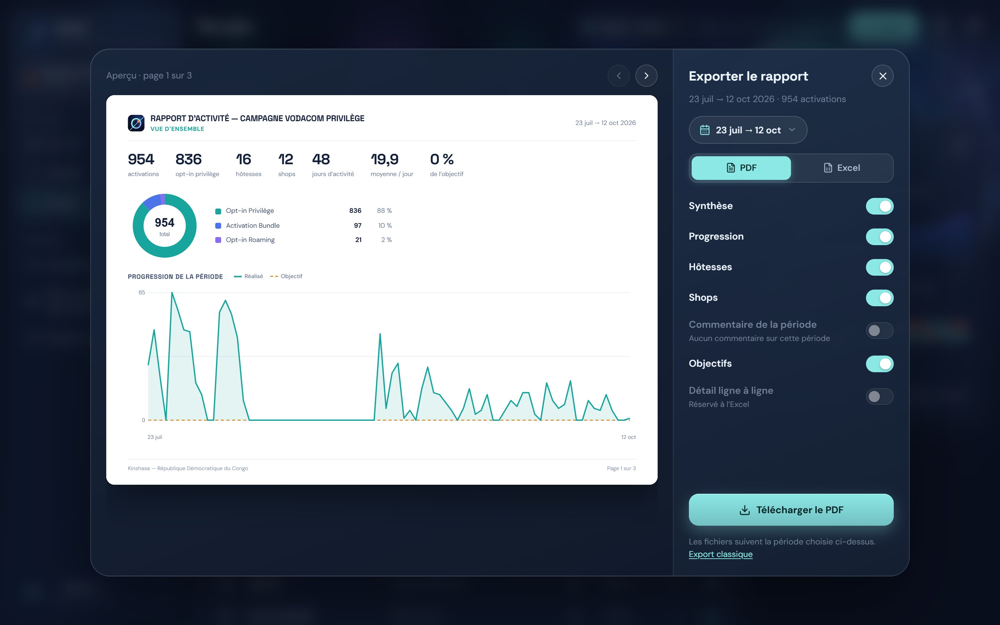
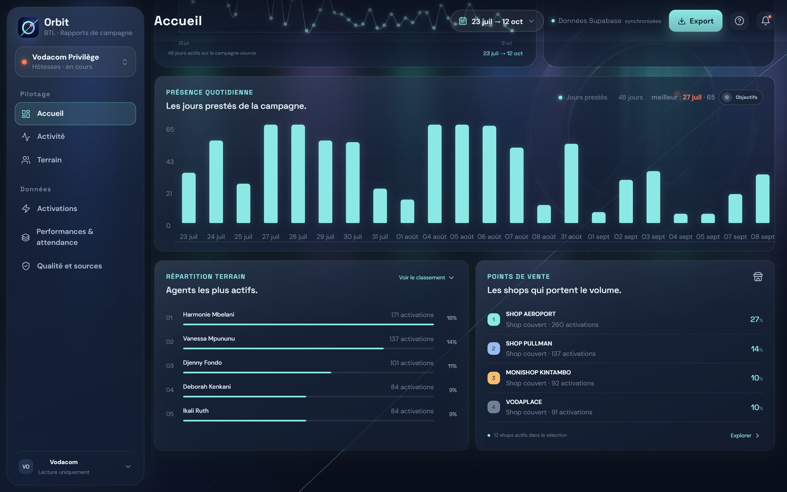
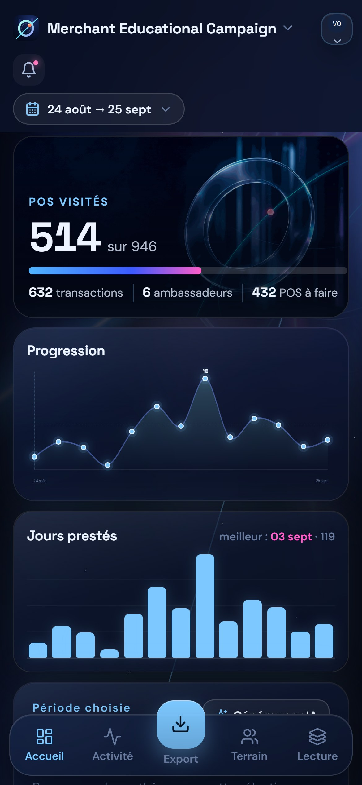

Orbit.
Chaque campagne,
en temps réel.
L'outil qui transforme le terrain en décisions, et nos rapports en service vendable.
Aujourd'hui, un rapport
se reconstruit à la main.
Données éparpillées
WhatsApp, photos, fichiers Excel, notes de superviseurs.
Des heures de compilation
Chaque semaine, quelqu'un recolle les morceaux.
Décisions en retard
Quand le problème est visible, la semaine est passée.
Lundi, 9 h.
Tout le monde voit
la même chose.
Plus de « je vous envoie le fichier ». La campagne s'affiche, on discute, on décide.

Une seule appli.
Le terrain remonte seul.
Les agents saisissent sur le terrain. Orbit calcule, classe, commente et exporte.
Partout.
Sans installation.
Un lien suffit
Ordinateur, tablette, téléphone, écran de salle.
S'installe comme une appli
Une icône sur le bureau ou l'écran d'accueil, en un geste.


Une campagne nouvelle ?
Orbit s'adapte.



Une seule source.
Zéro version.
Base unique et sécurisée
Tout le monde lit les mêmes chiffres, au même moment.
Chaque correction est tracée
Qui, quoi, quand : le journal le garde.

Le chiffre se calcule,
il ne se recopie plus.
Avant
- Recopies entre WhatsApp et Excel
- Formules cassées, doublons, oublis
- Chiffres corrigés après envoi au client
Avec Orbit
- Saisie unique, au moment de l'action
- Totaux et objectifs calculés automatiquement
- Anomalies signalées avant qu'elles ne partent
Un rapport client
en 30 secondes.
PDF prêt à envoyer, ou Excel avec formules et données brutes, vérifiable par le client.

On pose la question.
Orbit répond chiffres à l'appui.
Commentaires de période générés, et questions libres sur la campagne.
Sur la période, les trois meilleurs ambassadeurs sont :
• Becky O. : 211 transactions sur 10 jours
• Patience T. : 141 transactions sur 12 jours
• Jesly B. : 113 transactions sur 12 jours
Les notes de terrain signalent des lenteurs de connexion et des retards d'approvisionnement des fonds.
Suggestion : approvisionner les fonds dès le matin.
Jeudi, un shop décroche.
Vendredi, on corrige.
Rythme jour par jour, classement des lieux, présence des agents : on déplace les équipes avant la fin de la semaine.

Le client voit
ce que nous décidons.
Par campagne, BTL ouvre ou ferme l'accès, les objectifs et les questions à l'IA.
Kinshasa, 11 h.
Le superviseur sait déjà.
Un coup d'œil au téléphone entre deux shops : qui a pointé, combien d'activations, où ça freine.

Du terrain à la décision,
en quelques secondes.
Orbit ne vaut que si
tout le monde l'utilise.
Un agent qui ne saisit pas, c'est un chiffre faux pour toute la campagne.
Agents
Saisie systématique, le jour même.
Superviseurs
Contrôle quotidien et notes de clôture.
Chargés de compte
Rapports clients exclusivement depuis Orbit.
Direction
Réunions de pilotage sur Orbit.
Un investissement unique,
puis presque rien.
Une fois. Déjà réalisé.
Branchement d'une campagne de type nouveau.
Base de données, site et IA compris.
Orbit devient
une ligne de facture.
Accès client, tableaux de bord, rapports.
Commentaires et questions à la campagne.
Nombre de questions IA par jour selon le contrat.
Lent au départ,
net ensuite.
Hypothèses : 2 mois de rodage non facturés, puis 2 campagnes par mois, une sur deux avec l'option IA. Coûts : 500 $ au départ, 100 $ par campagne, 50 $/mois d'hébergement.
Testons vos hypothèses.
Chacun y gagne.
Direction
Vision en direct, nouvelle source de revenu.
Superviseurs
Moins de compilation, plus de terrain.
Agents
Leur travail est visible, et reconnu.
Client
Transparence, réactivité, confiance.
90 jours pour en faire
un réflexe.
Adopter
- Prise en main par équipe
- Toutes les campagnes en cours sur Orbit
- Fin des rapports Excel internes
Montrer
- Accès client ouvert sur une campagne
- Réunions de pilotage sur écran
- Retours d'usage, ajustements
Facturer
- Orbit dans les nouveaux devis
- Option IA proposée
- Bilan chiffré à la direction
Les questions qu'on va nous poser.
Une décision :
Orbit, pour toute l'agence.
Merci.
Orbit · développé par Eldorado_design pour BEYOND THE LINE Africa.
By Eldo